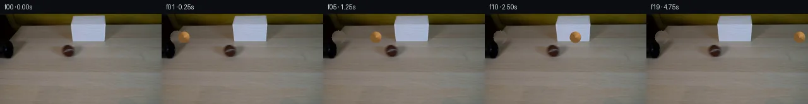

![首帧]()

Round 00
2026-11-06T06:58:33.498768+00:00像素候选变化代码 +372/−0inspection 更新
pixels 6847fe46e15e4cf6 · code cce4a54d27b48fcb
查看本轮 generate.py 真实 diff
--- previous/generate.py +++ current/generate.py @@ -0,0 +1,372 @@ +#!/usr/bin/env python3 +"""PixelWorld-Text: Generate 20 frames of a tennis ball rolling from a black tube across a wooden table. + +Frame 00 is the original first_frame.png. Frames 01-19 show a brown tennis ball +rolling left-to-right across the table, emerging from the black tube. +""" + +import numpy as np +from PIL import Image +import os, sys + +# ── Paths ────────────────────────────────────────────────────────────────── +WORKSPACE = os.path.dirname(os.path.abspath(__file__)) +TMPDIR = os.path.join(WORKSPACE, ".tmp") +FRAMES_DIR = os.path.join(WORKSPACE, "frames") +os.makedirs(TMPDIR, exist_ok=True) +os.makedirs(FRAMES_DIR, exist_ok=True) + +# ── Load first frame ─────────────────────────────────────────────────────── +original = np.array(Image.open(os.path.join(WORKSPACE, "first_frame.png"))).astype(np.uint8) +H, W = original.shape[:2] # 144, 256 + +# ── Ball parameters ──────────────────────────────────────────────────────── +BALL_RADIUS = 9 # tennis ball radius in pixels +BALL_ROW = 37 # center row (aligned with tube center) +BALL_COLOR = np.array([150, 105, 55], dtype=np.float64) # base brown tennis ball color +HIGHLIGHT = np.array([60, 50, 30], dtype=np.float64) # how much to add for highlight +SHADOW = np.array([50, 35, 20], dtype=np.float64) # how much to subtract for shadow +SPECULAR = np.array([100, 100, 90], dtype=np.float64) # specular highlight addition + +# Ball X positions for each frame (column of ball center) +# Frame 00: ball at tube exit (col ~24, partially inside tube) +# Frames 01-19: ball rolls right +BALL_X = np.array([ + 24, # frame 00 + 35, # frame 01 + 47, # frame 02 + 59, # frame 03 + 71, # frame 04 + 83, # frame 05 + 95, # frame 06 + 107, # frame 07 + 119, # frame 08 + 131, # frame 09 + 143, # frame 10 + 155, # frame 11 + 167, # frame 12 + 179, # frame 13 + 191, # frame 14 + 203, # frame 15 + 215, # frame 16 + 227, # frame 17 + 235, # frame 18 + 242, # frame 19 +], dtype=np.float64) + + +def make_ball_sprite(radius, cx, cy): + """Create a ball sprite with directional shading. + + Lighting: The white lampshade is on the right side of the frame, + so the ball is lit from the upper-right. This creates: + - A bright highlight on the top-right quadrant + - A darker shadow on the bottom-left quadrant + - A small specular dot on the upper-right surface + """ + r = int(np.ceil(radius)) + 3 # padding for soft edges + size = 2 * r + 1 + y, x = np.mgrid[-r:r+1, -r:r+1] + dist = np.sqrt(x**2 + y**2) + + # Ball alpha mask (soft edge) + inner = np.clip(radius + 0.5 - dist, 0, 1) + outer = np.clip(radius + 1.5 - dist, 0, 1) + soft = np.clip(dist - (radius - 0.5), 0, 1) + alpha = inner # core alpha for compositing + + # Normalized direction vectors for shading + # Unit direction from center to pixel (pointing outward from sphere surface toward camera) + # For a sphere, the normal at each point points radially outward from sphere center + eps = 1e-6 + nx = x / (dist + eps) + ny = y / (dist + eps) + nz_sq = 1.0 - np.clip(nx**2 + ny**2, 0, 1) + nz = np.sqrt(np.maximum(nz_sq, 0)) + + # Light direction: from upper-right (lampshade position ~ col 140, row 15) … diff truncated; 285 more lines …